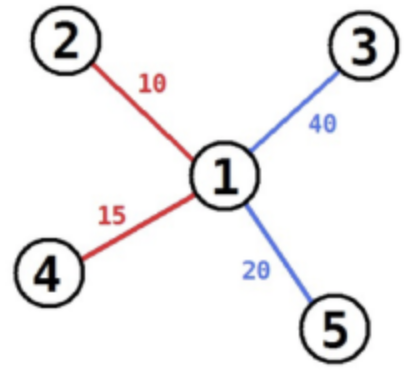
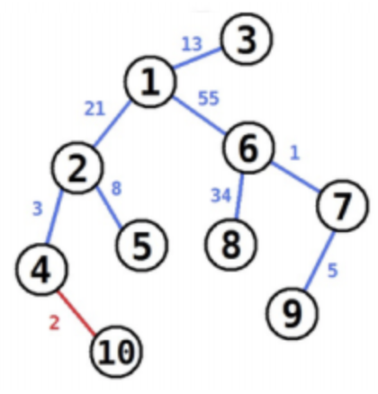

在达芬奇时代，有一个流行的儿童游戏称为连珠线。当然，这个游戏是关于珠子和线的。线是红色或蓝色的，珠子被编号为 $1$ 到 $n$。这个游戏从一个珠子开始，每次会用如下方式添加一个新的珠子：
每条线都有一个长度。游戏结束后，你的最终得分为蓝线长度之和。
给你连珠线游戏结束后的游戏局面，只告诉了你珠子和链的连接方式以及每条线的长度，没有告诉你每条线分别是什么颜色。
你需要写一个程序来找出最大可能得分。即，在所有以给出的最终局面结束的连珠线游戏中找出那个得分最大的，然后输出最大可能得分。
第一行一个正整数 $n$，表示珠子的数量。珠子从 $1$ 到 $n$ 编号。
接下来 $n−1$ 行每行三个整数 $a_i,b_i,c_i$。保证 $1≤a_i<b_i≤n$。$1≤c_i≤10000$。表示 $a_i$ 号珠子和 $b_i$ 号珠子间连了长度为 $c_i$ 的线。
输出一个整数，表示最大可能得分。
5 1 2 10 1 3 40 1 4 15 1 5 20
60
10 4 10 2 1 2 21 1 3 13 6 7 1 7 9 5 2 4 3 2 5 8 1 6 55 6 8 34
140
【样例 1 解释】
可以通过如下方式获得 60 分：首先从 3 号珠子开始。

【样例 2 解释】

【数据规模与约定】
第一个子任务共 13 分，满足 $1≤n≤10$。第二个子任务共 15 分，满足 $1≤n≤200$。第三个子任务共 29 分，满足 $1≤n≤10000$。第四个子任务共 43 分，满足 $1≤n≤200000$。
 Comet OJ
Comet OJ